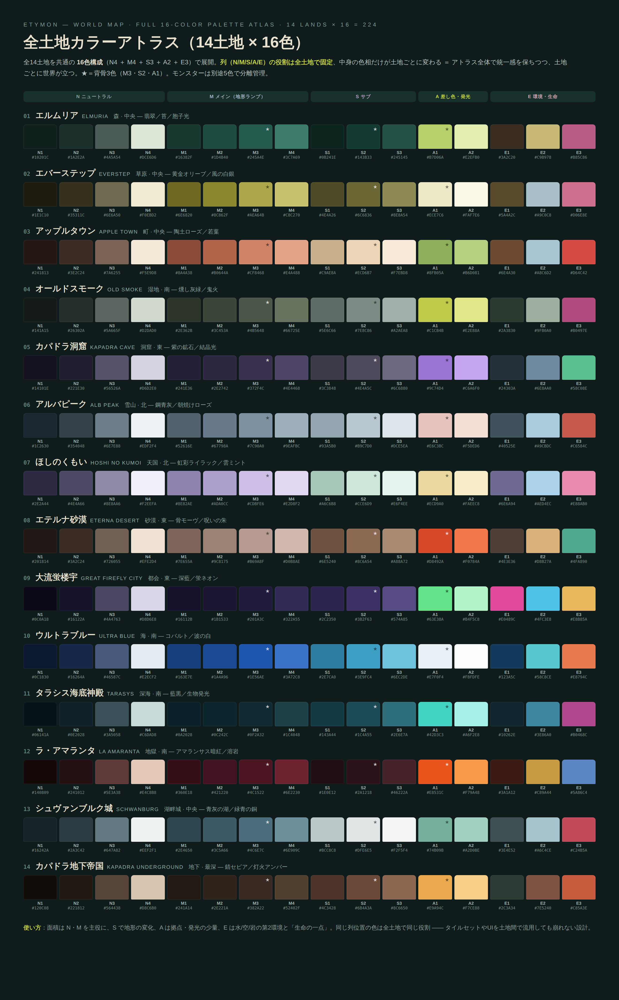
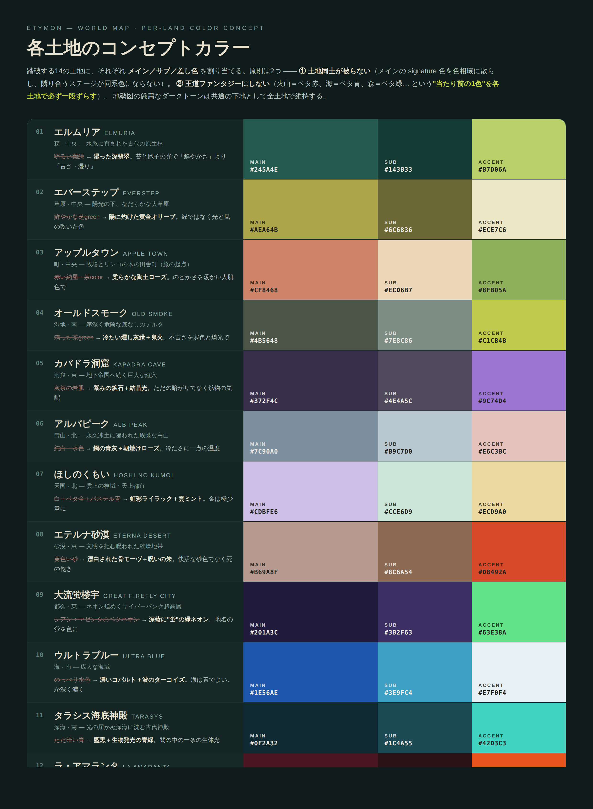
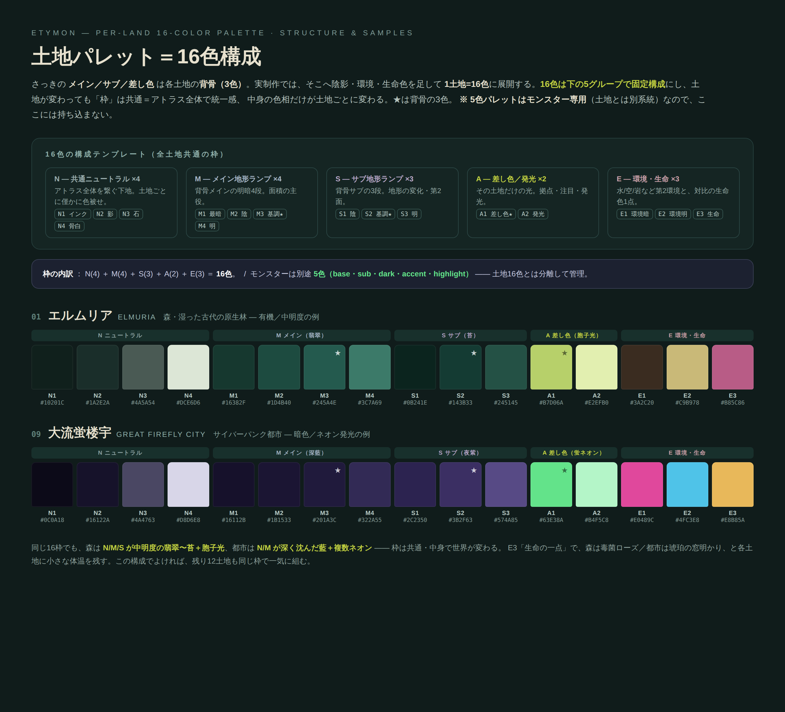
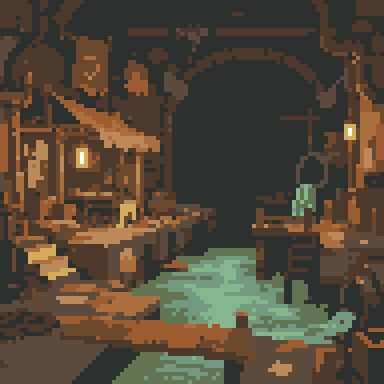

時が乱れている…
 坂本瞳のほらあな
坂本瞳のほらあな
Etymon（お蔵入り企画）
これは何
単語アプリ（vocab-app）用に考えてた独自IPの世界観企画。
結局アプリ本体は「タイピングで覚える」一本に絞ることにしたけん、企画そのものはお蔵入りに。
でも設定とか用語とかアートは自分でイチから考えたもんやし、消すのもったいないけん、ここに保管しとく。
いつか別プロジェクト（EMG）でちゃんと形にするかもせん。
コンセプト
「単語が、まるい生き物になる」学習RPG。覚えた英単語が Etymon という生き物に育つ、っちゅう設定。
アートワーク



